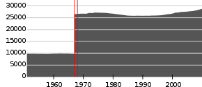

Halden
| Opprydning: Denne artikkelen trenger en opprydning for å oppfylle Wikipedias kvalitetskrav. Du kan hjelpe Wikipedia ved å forbedre den. |
{kind=link}
Koordinater: 59°07′42″N 011°23′04″Ø
| Halden | |||||
|---|---|---|---|---|---|
|
|
|||||
| Land | Norge | ||||
| Fylke | Østfold | ||||
| Status | Kommune | ||||
| Innbyggernavn | Haldenser | ||||
| Adm. senter | Halden | ||||
| Areal – Totalt: – Land: – Vann: |
642,35 km² 596,41 km² 45,94 km² |
||||
| Befolkning | 29 919[a] | ||||
| Kommunenr | 0101 | ||||
| Målform | Bokmål | ||||
| Internettside | www.halden.kommune.no | ||||
| Politikk | |||||
| Ordfører | Thor Edquist (H) (2011) | ||||
| Befolkningsutvikling 1951–2010[b] | |||||
|  | |||||
|
a^ SSB: Befolkningsstatistikk (1. april 2013)
b^ Vertikale, røde streker markerer grenseendringer. Kilde: SSB |
|||||
{kind=link}
{kind=link}
{kind=link}
Halden er en by og storkommune i Østfold. Storkommunen Halden grenser til Rakkestad i nord, Aremark i øst, til Sverige i øst, sør og vest og til Sarpsborg i nordvest. Kommunen består av de tidligere herredene Berg og Idd samt bykommunen Halden. Berg og Idd er typiske landbruksområder, mens Halden er Norges eldste industriby. Byen og kommunen deles i to av elva Tista som utgjør siste etappe i Haldenvassdraget. Den øvre delen av Tista renner gjennom det tidligere tettstedet Tistedal. Halden er den eneste norske byen som er nevnt i den norske nasjonalsangen.
Navnet Halden kommer fra det norrøne hallr el. hǫll som betyr bakke eller skråning. Byen er omgitt av et landskap som heller innover mot sentrum. D-en har kommet til fra dansk påvirkning.[1]
Fra 1665 til 1928 het byen offisielt Fredrikshald eller Frederikshald.
Innhold |
Geografi [rediger]
Klima [rediger]
| Normaler for Halden (10 moh.)[2] | Jan | Feb | Mar | Apr | Mai | Jun | Jul | Aug | Sep | Okt | Nov | Des | År |
|---|---|---|---|---|---|---|---|---|---|---|---|---|---|
| Temperaturnormal (°C) | −2,9 | −2,8 | 0,2 | 4,9 | 10,6 | 14,8 | 16,7 | 15,5 | 11,5 | 7,5 | 2,4 | −1,1 | 6,4 |
| Nedbør (mm) | 55 | 45 | 50 | 45 | 55 | 70 | 75 | 80 | 90 | 105 | 90 | 60 | 820 |
Det har blitt drevet meteorologiske målinger i regi av met.no i Halden fra 1884. Høyeste og laveste offisielt registrerte temperaturer i kommunen er henholdsvis 32,0 grader 8. august 1975 på Prestebakke[2] og −33,7 grader 15. januar 1893 på Krappeto.[3]
Halden har norgesrekorden for varmeste tropenatt. 9. juli 1933 målte Halden værstasjon 25,5 grader i minimumstemperatur.
Historie [rediger]
.jpg){kind=link}
{kind=link}
{kind=link}
Ladestedet Halden vokste fram på femtenhundretallet som utskipningshavn for trelast til Holland og England. Byen fikk militær betydning da områdene sør for Iddefjorden ble avstått til Sverige ved freden i Roskilde, 1658. Etter å ha motstått flere svenske angrep ble stedet tilkjent kjøpstadsprivilegier og døpt Fredrikshald (etter 1665 Frederik III) i 1665. I 1716 tente borgerne fyr på byen for å avverge et nytt svensk angrep ledet av Karl XII. To år senere falt den samme kongen under beleiringen av Fredriksten festning, noe som bidro til å avslutte den store nordiske krig. I 1808 var det harde kamper i Enningdal mellom norske og svenske styrker.
Fra 1814 til 1905 var Fredrikshald det kommersielle sentrum for et stort omland både i Norge og Sverige. Byens borgere bidro økonomisk til byggingen av Dalslandsbanen. I 1813 grunnla Mads Wiel Bomuldspinneriet i Tistedalen (i drift fra 1815), den første mekaniske industribedriften i Norge.
Saugbrugsforeningen, i dag Norske Skog Saugbrugs, ble etablert som treforedlingsbedrift i Fredrikshald fra 1859.
Fredrikshald ble en betydelig sjøfartsby, med 133 skip og en samlet besetning på 1200 mann i 1875. Etter dette fikk Halden færre seilskuter, men flere industribedrifter.
Langs Iddefjorden ble det tatt ut Iddefjordsgranitt i en rekke stenbrudd. Stenindustrien gikk over ende etter hvert som billigere bygningsmaterialer vant terreng.
Etter unionsoppløsningen i Karlstad, 1905 ble området demilitarisert og byen tapte samtidig mye av sitt kommersielle omland.
I 1928 tok byen tilbake sitt opprinnelige navn.
Haldens tid som skotøyhovedstad [rediger]
Halden har fra 1892 til 1998 hatt ialt 17 skofabrikker. På 1950-tallet produserte byens 800 skotøyarbeidere årlig 800 000 par sko. Hver femte sko i Norge ble da produsert i Halden, som fram til 1960-tallet ble regnet som Norges skotøyhovedstad. En rekke av fagarbeiderne kom fra Örebro, Sveriges skotøysentrum.
- Først: Johannes Carlsson etablerte i 1892 skoproduksjon i Tistedalen med 4 ansatte. Bedriften flyttet i 1896 til Kongens Brygge i Halden sentrum og ble A/S Haldens Skotøifabrik. Den hadde 250 ansatte i 1936. Fabrikken ble i 1956 nedlagt som den første av de store skofabrikkene. Tidlig ute var også J.T. Halvorsen, som drev det største skoverkstedet i Halden med 40-50 svenner i arbeid i Skippergata. Produksjon med maskiner ble det for J.T. Halvorsens Skofabrikk fra 1896. «Halvorsens sjøstøvler» ble kjent langs hele Norskekysten. Likeså «Folkestøvelen» fra 1920-årene. J.T. Halvorsens Skofabrikk hadde 146 arbeidere i 1914 og ble nedlagt i 1970.
- Dårligst kvalitet: I krigsårene 1940-1945 ble det i Halden laget sko av papp, papir og fiskeskinn. De fleste sko var merket: «Skoen garanteres ikke».
- Størst produksjon: Østfold Skofabrikk fra 1920 utvidet i 1945 skofabrikken i Os allé. I 1964 ble der produsert 136 400 damesko, mokasiner og ortopediske sko. Bedriften hadde avdelingskontor i Oslo og ble nedlagt i 1968.
- Sist: Haldens skofabrikkhistorie ble på 1990-tallet avsluttet med produksjonen til Casko Skofabrikk A/S på Øberg i Tistedalen. (Kilde: museumnett.no om ‹Bomuldspinderiet i Tistedalen›.)
Befolkning [rediger]
- Halden hadde 28 776 innbyggere den 1. januar 2010.[trenger oppdatering]
- Halden hadde 26 525 innbyggere den 1. januar 1967, dagen da gamle Halden, Berg og Idd kommuner ble slått sammen.
- Haldens innbyggertall har vært stabilt de 40-50 siste årene, men har dog økt hvert eneste år etter 1993. Prognoser fra Statistisk Sentralbyrå viser at Haldens folketall ligger an til å stige til ca. 32 000 personer i år 2025.
Tettstedet Halden har 23 897 innbyggere per 1. januar 2012[4].
Årstall: Antall innbyggere i Halden
- 1665 : 500-1000 innbyggere da Halden fikk bystatus (22 500 i Østfold, og 440 000 personer i Norge).
- 1680 : 1200 personer bosatt i ca. 250 hus (store bybranner i 1667, 1676, 1703 og 1716).
- 1769 : 3835 innbyggere i Fredrikshald og Tistedal, ifølge Norges første folketelling 15. august 1769.
- 1865 : 9217 personer er i Fredrikshald bosatt i 623 hus (16 055 bosatte medregnet Berg og Idd).
- 1875 : 9792 innbyggere i Fredrikshald (Østfold 107 600, og Norge 1 813 424).
- 1900 : 22 575 Av disse 12 243 bosatt i Fredrikshald (5092 i Berg, og 5241 i Idd).
- 1946 : 22 546 Av disse: 9 419 bosatt i Halden kommune(7485 i Berg, og 5642 i Idd).
- 1960 : 25 572 Av disse: 10 006 bosatt i Halden kommune (8530 i Berg, og 7026 i Idd).
- 1967 : 26 525 innbyggere i den da nysammenslåtte Halden kommune.
- 1970 : 26 626
- 1980 : 26 564
- 1990 : 26 696
- 1993 : 25 896
- 2000 : 26 733
- 2007 : 27 835 innbyggere i Halden (262 523 innbyggere i Østfold, og 4 681 134 i Norge).
- 2008 : 28 092 innbyggere.
- 2009 : 28 776 innbyggere.
Litt mer om årlig befolkningsutvikling i Halden fra 1967 til 2007:
- Flest nyfødte: 457 barn i 1968. Færreste nyfødte: 237 barn i 1983.
- Flest døde: 369 personer i 1987. Færreste døde: 301 personer i 2000.
- Flest innflyttere: 1187 personer i 1971. Færrest innflyttere: 603 personer i 1984.
- Flest utflyttere: 1075 personer i 1970. Færrest utflyttere: 634 personer i 1985.
- Haldens største vekst i folketallet: 400 personer i år 2000.
- Haldens største reduksjon i folketallet: 174 personer i 1984.
Skolehistorie[5] [rediger]
Halden har med sine mange skoler og lærere vært en viktig utdanningsplass – for Østfold, Norge og nordre Bohuslän i Sverige.
- 1666: Latinskolen åpnes ved kirken. Skolen brant ned ved bybrannen i 1703.
- 1786: Garnisonsskole for soldater ble etablert.
- 1805: Oppstart 16. sept. for Det Fredrikshaldske Læreinstitutt, også kalt Prins Kristian Augusts Minde.
- 1832: Den nye lærde skole innviet ved bybrua med 48 elever.
- 1850: "Fredrikshalds lærde og realskole" opprettet ved kongelig resolusjon av 28. mai 1850.
- 1863: Den første lærerorganisasjon i Fredrikshald/Halden ble stiftet 13. januar 1863.
- 1869: De lærdes skole inndeles i middelskole og gymnasium.
- 1872: 1. gymnasiastforestilling vises i Fredrikshalds teater. Gymnasiastene stifter i 1879 Brageteateret, som har spilt årlig i Fredrikshalds teater fra 1911 – og som fortsatt spiller hvert år på samme sted.
- 1876: Rokke skole innvies. Legges ned i 1970.
- 1881: Gutteskolens nybygg står ferdig, og pikene flyttet fra Borgerskolen på Sydsiden til Fayegaarden.
- 1887: Innvielse av Haldens nye gymnasium. Fra 1973 til dags dato har bygningene vært i bruk av Rødsberg skole for ungdomsskoleelever.
- 1914–1936: Nye barneskoler tas i bruk. Iddevang skole innvies i januar 1914, med to utedoer – en for jenter, en for gutter. Os skole (Pikeskolen) sto ferdig våren 1914. (Iddevang skole fikk elektrisk belysning i 1920/21). Kornsjø skole innviet 27. februar 1915, Aspedammen skole 14. februar 1922, Bråtorp skole i 1934, Øberg skole i 1936.
- 1926: Første russedåp i Fredrikshald (Halden).
- 1941: Tyskerne forbød drift av Brage gymnasiastsamfunn. Våren 1942: Læreraksjon mot «Lærersambandet».
- 1958: Folkvang skole ble innviet 7. september
- 1963: Halden lærerskole opprettes, blant annet fordi kommunene skal etablere 9-årig grunnskole.
- 1964: Kveldsakademiet blir medlem av Folkeuniversitetet.
- 1971: I Norge opprettes de første førskolelæreravdelinger ved lærerskolene i Halden, Bodø, Volda, Stavanger og Hamar.
- 1973: Halden tar i bruk nye ungdomsskoler på Strupe og Risum. Halden lærerskole og Halden Gymnas samles i nytt skoleanlegg på Remmen, hvor 1 000 dekar ble stilt til disposisjon av grunneier Fritz Anker-Rasch.
- 1977: Østfold distriktshøgskole (ØDH) innvies 27. september 1977 med 70 studenter.
- 1988: Østfoldforskning stiftet 1. mars 1988.
- 1994: Oppstart for Høgskolen i Østfold – en samling av fylkets høgskoler, med fellesadministrasjon på Remmen i Halden.
- 2001: Gimle barneskole innvies nær Halden Ishall.
- 2004: Halden videregående skole samles ved å ta i et nytt, stort tilbygg på Porsnes.
- 2005: Nasjonalt senter for fremmedspråk i opplæring etableres ved Høgskolen i Østfold, Halden.
- 2006: Høgskolen i Østfold innvier det nye Høgskolesenteret i Halden, hvor totalt 2.500 personer er lokalisert på Remmen – som i tillegg til høgskolens sentrale ledelse samler datautdanninger, lærerutdanninger, økonomi-, samfunnsfag- og språkstudier.
Næringsliv [rediger]
Virksomheter i Halden:
- Nexans
- Norske Skog
- kommunikasjonsbyrået Odin Media as
- ElektroVakuum
- LaMote – en virksomhet i Orklakonsernet
- Fresenius Kabi
- Communicate Norge AS
Forskning [rediger]
Institutt for energiteknikk i Halden er vertsorganisajon for Haldenprosjektet, som er det største internasjonale forskningsprosjekt i Norge, med deltagere fra ca. 20 OECD land. Prosjektet har pågatt siden 1958.
Skole og utdanning [rediger]
Halden er hovedbasen for Høgskolen i Østfold. Høgskolesenteret i Halden samler til daglig 2.500 personer – disse fordelt på høgskolens ledelse samt avdelingene for lærerutdanning, informasjonsteknologi (data), økonomi-, språk- og samfunnsfag.
HiØ huser også Østfold fylkes største fagbibliotek og Fremmedspråksenteret i Norge.
Turisme [rediger]
Svinesund og Fredriksten festning er de to stedene i Halden som er mest besøkt av turister. I 2005 ble 100-årsjubileumet for unionsoppløsningen feiret, blant annet med åpningen av ny bru på Svinesund. Fra 2007 har også det TV-sendte «Allsang på Grensen» fra Fredriksten Festning bidratt til flere turister i Halden. Det er kanskje blitt en av de største opplevelsene Halden har å by på i sommerhalvåret, sammen med mat- og trebåtfestivalen som finner sted i slutten av juni.
Politikk [rediger]
Kommunevalget høsten 2011 tok et borgerlig flertall makten med Thor Edquist fra Høyre som ordfører. Flertallet består nå av Høyre, Venstre, Kristelig Folkeparti, Senterpartiet og Miljøpartiet De Grønne.
Historie [rediger]
I industribyen Halden kunne Arbeiderpartiet styre med rent flertall i flere tiår etter den 2. verdenskrig. LO regjerte på de mange industriarbeidsplassene. Arbeiderpartiet regjerte i kommunestyret, også lenge etter at Berg, Idd og Halden ble slått sammen til Halden kommune i 1967.
Den 25. september 1972 sa 8316 haldensere ja til norsk medlemskap i et Europeisk Fellesskap ‑ EF (nå EU), det vil si 58 prosent av de avgitte stemmene. Den politiske stemningen da, i Norge generelt og Halden spesielt, er skildret av Dag Solstad i romanen 25. septemberplassen.
Etter kommunevalget i 1995 tok et borgerlig flertall makten med Carsten Dybevig fra Høyre som ordfører til han i 2001 kom på Stortinget. En kombinasjon av at Arbeiderpartiet i Halden førte en sterk opposisjonspolitikk, og av at det borgerlige samarbeidet i byen slo sprekker, førte til at Halden ble rikskjent. Stadig krangling i kommunestyret – også kringkastet minutt for minutt via lokalfjernsyn (TV Halden), bidro heller ikke til at de økonomiske problemene i Halden kommune ble løst på slutten av 1990-tallet.
Etter valget i 2003 fikk Halden ordfører Per Kristian Dahl fra Arbeiderpartiet, varaordfører Eirik Milde fra Høyre og Fremskrittspartiet som støttespiller. Før jul 2006 trakk Fremskrittspartiet seg ut av dette samarbeidet.
Kommunevalget høsten 2007 gav Per Kristian Dahl 4 nye år som ordfører i Halden, hvor Arbeiderpartiet økte sin oppslutning med 19,9 prosent og antall mandater i kommunestyret fra 11 til 21. Flertallet bestod av Ap(21),KrF(4),SV(4),Pp(1). Opposisjonen bestod av FrP(8),H(5),V(2),Sp(2),RV(1),MDG(1)
Valgresultatet i 2003 [rediger]
| Parti | Prosent | Stemmer | Seter i by-/kommunestyret | Medlemmer av formannskapet |
|||
|---|---|---|---|---|---|---|---|
| % | ± | totalt | ± | totalt | ± | ||
| Arbeiderpartiet | 23,8 | -5 | 2879 | -739 | 11 | -4 | 3 |
| Fremskrittspartiet | 15,6 | 3,1 | 1890 | 326 | 8 | 2 | 3 |
| Høyre | 16,5 | -5,5 | 1991 | -774 | 8 | -4 | 3 |
| Kristelig Folkeparti | 6,2 | -5,1 | 752 | -662 | 3 | -3 | 1 |
| Senterpartiet | 5,4 | 0,3 | 652 | 11 | 3 | 1 | 1 |
| Sosialistisk Venstreparti | 18,5 | 11,2 | 2231 | 1315 | 9 | 6 | 2 |
| Venstre | 1,7 | -1,4 | 202 | -186 | 1 | 0 | |
| Andre | 12,3 | 1482 | 245 | 3 | 1 | 2 | |
| Valgdeltakelse/Total | 57 % | 12079 | 49 | 15 | |||
| Ordfører: Per Kristian Dahl (Arbeiderpartiet) | Varaordfører: () | ||||||
| Merknader: Kilde: Statistisk sentralbyrå | |||||||
Valgresultatet i 2007 [rediger]
| Parti | Prosent | Stemmer | Seter i by-/kommunestyret | Medlemmer av formannskapet |
|||
|---|---|---|---|---|---|---|---|
| % | ± | totalt | ± | totalt | ± | ||
| Arbeiderpartiet | 43,6 | 19,9 | 5638 | 2759 | 21 | 10 | 4 |
| Fremskrittspartiet | 15,9 | 0,3 | 2057 | 167 | 8 | 0 | 2 |
| Høyre | 10,4 | -6,1 | 1343 | -648 | 5 | -3 | 1 |
| Kristelig Folkeparti | 7,3 | 2,1 | 948 | 196 | 4 | 1 | 2 |
| Senterpartiet | 4,9 | -0,5 | 639 | -13 | 2 | -1 | 1 |
| Sosialistisk Venstreparti | 7,3 | -11,2 | 949 | -1282 | 4 | -5 | 2 |
| Venstre | 3,6 | 1,9 | 460 | 258 | 2 | 1 | 0 |
| Andre | 6,9 | -5,4 | 890 | -592 | 3 | 0 | 2 |
| Valgdeltakelse/Total | 58,4 % | 12924 | 49 | 14 | |||
| Ordfører: Per Kristian Dahl (Arbeiderpartiet) | Varaordfører: (Arbeiderpartiet) | ||||||
| Merknader: Kilde: Statistisk sentralbyrå Halden kommune | |||||||
Kultur [rediger]
Museer [rediger]
Arkitektur [rediger]
{kind=link}
{kind=link}
Byen er gjentatte ganger herjet av brann. Etter den siste store bybrannen i 1826, ble mesteparten av sentrum bygget opp på nytt i løpet av ganske kort tid. Dette har gitt byen et enhetlig arkitektonisk preg; Halden er den norske empirebyen. De tre G-ene i norsk arkitekthistorie, Garben, Grosch og Gedde, virket alle i Halden i denne tiden.
Tradisjonelt var byen preget av handelsborgere og militære. Kommandanten på Fredriksten festning disponerte sitt eget gods, og fungerte nærmest som en lokal adelsmann. Etter industrialiseringen ble Halden en sosialdemokratisk bastion, og det gamle borgerskapet forsvant. De satte imidlertid spor igjen etter seg i form av arkitektur og kulturelle institusjoner:
- Rød herregård, Anker-familiens gamle gods ble ovedratt Stiftelsen Rød Herregård og drevet som museum.
- Fredrikshalds teater, Norges eldste bevarte barokkscene, bygd og drevet av pengesterke teateramatører, er i dag restaurert og skånsomt modernisert også av foreningen Haldens Minder.
- Haldens klub, selskapsklubb for de kondisjonerte, hadde eget rom for frimurerne.
- Konservativen, den konservative arbeiderforening, eller Harald Haarfagres klub, var fram til 2004 lokaler for Østfold teater. Her ligger også Rosenlundsalen, som er Norges eldste scene. Den ligger bare noen 100 meter fra Norges eldste bevarte barokkscene, Fredrikshalds teater.
Musikk [rediger]
De mange årene som garnisonsby har også satt spor. Da Forsvarets Distriktsmusikkorps Østlandet, populært kalt Divisjonsmusikken, ble nedlagt i 2002, oppsto straks en arvtaker i form av det sivile korpset Det Norske Blåseensemble anno 1734. Ensemblet viderefører tradisjonen fra komponistene Reissiger og Borg.
Til forskjell fra resten av landet, hvor det første og de to siste versene av «Ja vi elsker» synges, har Halden sin egen tradisjon, der synges i tillegg til første vers det fjerde verset der byen omtales. Haldensangen er komponert av Oscar Borg og har tekst av Brynjolf Hanssen. Første vers lyder:
- Halden, Iddefjordens pryd, du er vår egen by
- lunt du ligger der bak gamle Fredriksten i ly
- Rike minner vekker navnet med historisk klang
- derfor og vår kjære Halden, hylder vi i sang!
Byen har også et aktivt bandmiljø. Kommunen stiller øvingslokaler til rådighet i et eget rockehus. Populærmusikere som Trond Holter, Henning Kvitnes, Ole Evenrud og Geir Sundstøl har sin bakgrunn i dette miljøet.
Teater [rediger]
Halden har et rikt teaterliv som har sine historiske røtter i det 18. århundre. I tillegg til Fredrikshalds teater fra 1838 finner man Norges eldste teatersal og en moderne studioscene, i Konservativen. I Fredrikshalds teater har skoleelever fremført forestillinger siden 1872, som Brageteateret fra 1879 til dags dato. Halden var vertskap for Verdens amatørteaterfestival i 1991 og Østfold teaterverksted da dette ble etablert. Aktive på byens scener og i bybildet de senere årene er dramalinjens elever og lærere fra Halden videregående skole, Avdeling Risum - som blant annet har arrangert Bom Kræsj Bang-Festivalen i flere år. Barne- og ungdomsskolene har et eget tilbud gjennom Veslefrikk kultur- og teaterverksted
Idrett [rediger]
{kind=link}
På grunn av mildt klima og snøfattige vintre, er området dårlig egnet for skisport. Halden skiklubb konsentrerer seg derfor om orientering, noe som passer godt i det skogrike omlandet. Byen har både fostret og tiltrukket flere dyktige orienteringsløpere. Som de fleste andre steder i Norge, er fotball den mest populære idretten i Halden. Kommunen har flere fotballag, bl.a. Berg IL, IDD SK, TTIF og det største av dem, Kvik Halden, spiller pr. 2011 i 2. divisjon. Den lokale volleyballklubben Halden volleyballklubb, og Comet, ishockeylaget, har begge spilt tidligere i eliteserien. I tillegg holder Halden Basketballklubb, Halden Topphåndball, HK Haldens damer og Halden Tennisklubb høyt nivå. Halden kommunes idrettslag er organisert under Halden idrettsråd.
I Halden ligger også et av Norges få curlinganlegg, i tilknytning til Halden Ishall. Flere lag fra Halden Curling Club [2] har vunnet norgesmesterskap.
Sykkelrittet Grenserittet har hvert år målgang i Halden.
Studentliv [rediger]
Studentene ved Høgskolen i Østfold er organisert i foreningen Halden Studentsamfund og har eget studenthus i det som var Halden Arbeidersamfund og nå bærer navnet Samfundet i Halden. I tillegg til å arrangere mange kulturarrangment for Østfolds publikum generelt, er dette et studenthus for konserter og arrangement i regi av studentenes foreninger for band, teater, radio, UKA, revy, foto, poker- og andre spillgrupper.
Bade- og turområder [rediger]
I Halden finnes det mange turområder og badesteder. Eskeviken på sydvestsiden av byen gir bademuligheter i en fjord som nå er ren nok til bading. For dem som ønsker ferskvannsbad finnes gode muligheter ovenfor byen, ved Vanninga i Femsjøen, og i Store Ertevann. Krusæter like ved er et offentlig badested som er populært blant familier.
Aviser [rediger]
Halden har lokalavisen Halden Arbeiderblad. Gratisavisa Halden Dagblad ble utgitt i 10 år, men måtte kaste inn håndkledet våren 2009.
TV og radiostasjoner [rediger]
Haldens egen kanal for lokalfjernsyn er TV Halden. Halden har også to lokale radiostasjoner Radio Prime Halden og Halden Nærradio, som deler på FM 107.5 Radio Prime Halden har faste programmer fra 06:30-09:03, 13:00-17:03 og musikk på kveldstid. Halden Nærradio (religiøs stasjon) har varierte innslag når Radio Prime Halden ikke sender. Studentene ved høgskolen i Halden driver i perioder Radio Samhald som er en nettradio, spesielt i forhold til studentenes årlige UKA-arrangement på Samfundet – hvor de har Norges minste radiostudio.
Annet [rediger]
Brygga Kultursal Halden ble innviet i desember 2008. Hovedsalen har plass til inntil 700 personer, samt kontor og øvingslokaler for Det Norske Blåseensemble.
Vennskapsbyer [rediger]
1. januar 2009 ble Vammala slått sammen med Mouhijärvi og Äetsä og ble til Sastamala.
Kjente personer fra Halden [rediger]
- Sortert kronologisk, dvs. etter fødselsår :
- Vincents Budde (1660–1729), oberstløytnant
- Ole Gløersen (1673–1734), kjøbman, sagbrukseier og politiker
- Peter Anker (1744–1832), embetsmann og guvernør
- Carsten Anker (1747–1824), embetsmann og politiker
- Mads Wiel (1791–1835), handelsmann og industrigründer
- Jacob Mathias Calmeyer (1802–1883), maler
- Thomas Fearnley (1802–1842), maler
- Carl Frederik Fearnley (1818–1890), astronom
- Carl Adolf Dahl (1828–1907), statsingeniør
- Sophus Jacobsen (1833–1912), maler
- Oscar Borg (1851–1930), komponist
- Mads Berg (1865–1955), skolemann, komponist og sangpedagog
- Birger Braadland (1879–1966), offiser og politiker
- Arnstein Arneberg (1882–1961), arkitekt
- Sven Elvestad (1884–1934), journalist og forfatter
- Egil Hjorth-Jenssen (1893–1969), skuespiller og teatersjef
- Erik Braadland (1910–1988), politiker og diplomat
- Olaf Knudsen (1911–1966), mangeårig norgesmester i tungvektsbryting
- Edin Løvås (1920–) Sjelesørger og predikant.
- Olaf Jensen (1926–), populærforfatter
- Frank Kiel Jacobsen (1933–2012), journalist og forfatter
- Ole-Jørgen Nilsen (1936–2008), skuespiller
- Henry Notaker (1941–), kringkastingsmann og forfatter
- Lars Sponheim (1957–), politiker
- Henning Kvitnes (1958–), musiker
- Knut Nærum (1961–), forfatter, komiker
- Tord Akerbæk (1962–), dramatiker
- Ole Evenrud (1962–), musiker
- Trond Holter (1965–), komponist, musiker
- Øystein Andersen (1965–), trommis
- Håkon Wium Lie (1965–), teknologidirektør i Opera Software
- Håkon Gulbrandsen (1969–), statssekretær i Utenriksdepartementet
- Morten Ståle Nilsen (1971–), musikkjournalist
- Harald Rønneberg (1973–), programleder
- Anette Young (1976–) Big Brother-deltaker
- Sverre Næss (1992–), svømmer, norgesmester i flere svømmegrener
- Se også kategorien Personer fra Halden kommune.
Steder i Halden kommune [rediger]
{kind=link}
Tettstedene [rediger]
Andre steder og strøk [rediger]
Annet [rediger]
Halden er også navnet på et prestegjeld i Sarpsborg prosti i Den norske kirke som har sognene Halden, Berg og Rokke.
Referanser [rediger]
Fotnoter [rediger]
- ^ [1] Store Norske Leksikon - Halden
- ^ a b eklima.no
- ^ Oversikt over luftens temperatur og nedbøren i Norge i året 1893, utgitt av Det Norske Meteorologiske Institutt (DNMI - nå met.no).
- ^ (1. januar 2012). Tettsteder. Folkemengde og areal, etter kommune.. Besøkt 11. september 2012.
- ^ Om Haldens skolehistorie, Høgskolen i Østfold
Eksterne lenker [rediger]
| Commons: Category:Halden – bilder, video eller lyd |
- Kultur i Halden på kart fra Kulturnett.no
- Halden Kommune
- Halden Turist
- Halden.net Startside for Halden
- Gamle postkort fra Halden
- Bilder fra Halden på Flickr.com
|
|||||||||
{kind=link}
|
||||||||||||||||||
|
||||||||||||||||||
|
||||||||||||||||||||||||||||||||||||||||||||||||||||||||||||||||||||||||||||||||||||||||||
|
|||||||||||||||||||||||||||||||||||||||||||||||||||||||||||||||||||||||||||||||||||||||||||||||||||||||||||||||||||||||||||||||||||||||||||||||||||||||||||||||||||||||||||||||||